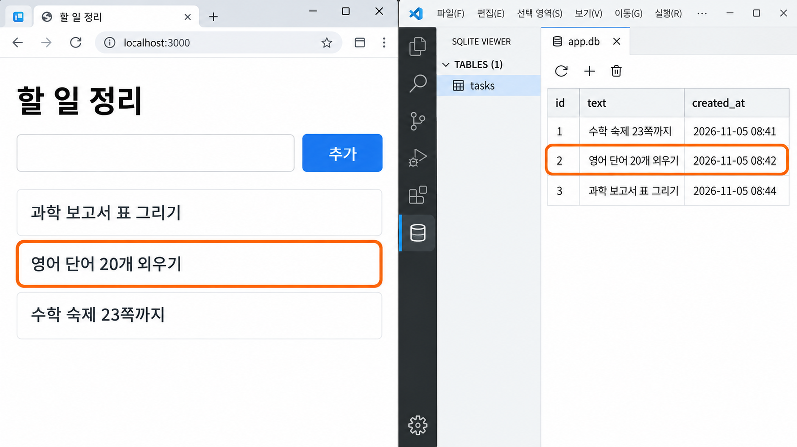

SQLite 데이터
저장 연결하기连接 SQLite
数据保存
서버를 껐다 켜도 남아 있는지 확인합니다.留下一条记录，在画面和 SQLite Viewer 里查看，
再确认关掉重开后它还在不在。
세 번 확인해야 「기억한다」고 말할 수 있다确认三次，才能说“记住了”
11-1에서 내 서비스가 기억할 기록을 정하고 AI의 저장 계획을 들었습니다. 오늘은 그 계획을 실제로 연결합니다. 연결이 끝나면 화면에 기록이 보이겠지만, 그것만으로는 기억했다고 말할 수 없습니다. 아래 세 곳에서 모두 같은 기록이 보여야 합니다.11-1 定下了自己服务要记住的记录，也听了 AI 的保存计划。今天就把这个计划真正连接起来。连接好后画面上会出现记录，但光凭这一点还不能说记住了。下面三个地方都要看到同样的记录才行。
| 어디서在哪里 | 무엇을 보는가看什么 | 교과서课本 |
|---|---|---|
| ① 화면① 画面 | 기록을 남기면 다시 보는 자리에 나타나는가留下记录后，会不会出现在再次查看的位置 | 4절第 4 节 |
| ② SQLite Viewer② SQLite Viewer | data/app.db에 같은 값의 행이 생겼는가data/app.db 里有没有出现同样值的行 | 5절第 5 节 |
| ③ 다시 켠 뒤③ 重新启动后 | 서버를 Ctrl+C로 멈췄다 켜도 그대로인가用 Ctrl+C 停掉服务器再打开，是否照旧 | 6절第 6 节 |
11-1 처음에 본 것처럼, 화면은 새로고침하거나 서버를 멈추면 비워집니다. 세 번째 확인까지 통과해야 사용자가 다음 날 다시 열었을 때 기록을 볼 수 있습니다.就像 11-1 开头看到的，一刷新或停掉服务器，画面就会被清空。要通过第三次确认，用户第二天重新打开时才看得到记录。
저장을 붙이기 전에 지금 되는 것을 확인한다接上保存之前，先确认现在能用的部分 실습实践
저장을 붙이기 전에 지금 상태부터 봅니다. 핵심 기능이 원래 안 되던 상태에서 저장을 붙이면, 나중에 문제가 생겼을 때 저장 때문인지 원래부터였는지 가릴 수 없습니다. 아래를 모두 확인한 뒤에 다음 절로 넘어갑니다.接上保存之前，先看看现在的状态。如果核心功能本来就不能用，又接上了保存，之后出了问题就分不清是保存造成的，还是本来就有的。下面全部确认后，再进入下一节。
- VS Code 탐색기 맨 위에
10이 보인다. 터미널이 두 개 있다. 하나는npm run dev, 다른 하나는opencode.VS Code 资源管理器最上面显示10。有两个终端：一个运行npm run dev，另一个运行opencode。 npm run dev터미널에Ready가 보이고, 브라우저에서http://localhost:3000이 열린다.npm run dev终端显示Ready，浏览器能打开http://localhost:3000。- 핵심 행동을 바르게 입력하면 결과가, 비워 두거나 잘못 입력하면 안내가 나온다.正确输入核心动作就出现结果，留空或输错就出现提示。
docs/10_api_promise.md3항에 저장할 기록 세 줄이 있다.docs/10_api_promise.md第 3 项里有要保存的记录三行。- VS Code 확장에 SQLite Viewer(
qwtel.sqlite-viewer)가 설치되어 있다.VS Code 扩展里已经装好了 SQLite Viewer（qwtel.sqlite-viewer）。
핵심 기능이 안 되면 10-2의 요청문으로 그것부터 고칩니다. SQLite Viewer가 없으면 11-1 교과서 6절대로 설치합니다. 둘 다 혼자 안 되면 손을 듭니다.核心功能不能用，就先用 10-2 的请求把它改好。没有 SQLite Viewer，就按 11-1 课本第 6 节安装。自己都弄不好就举手。
11-1에서 들은 계획에 「진행해」를 보낸다对 11-1 听到的计划发送“진행해” 실습实践
11-1 마지막에 AI는 표 이름과 열, 고칠 파일을 설명했고, 나는 그것을 PRD 5항과 대 보았습니다. 이제 그 계획대로 고치게 합니다. 같은 OpenCode 창이 열려 있으면 아래 요청문을 그대로 보냅니다. 요청문에 사용자의 입력을 안전하게 넣으라는 한 줄을 덧붙였습니다.11-1 最后，AI 说明了表名、列和要改的文件，我也把它和 PRD 第 5 项对照过了。现在让它按这个计划修改。如果同一个 OpenCode 窗口还开着，就原样发送下面的请求。请求里多加了一行，要求把用户的输入安全地放进去。
진행해. 방금 설명한 계획대로 고쳐 줘. 사용자가 입력한 값은 SQL 문장에 바로 이어 붙이지 말고 ? 자리로 넣어 줘. 다 고치면 고친 파일 이름과, 내가 화면에서 확인할 순서를 세 줄로 알려 줘.
진행해（开始改吧）。
按刚才说明的计划修改。用户输入的值不要直接拼进 SQL 语句，要用 ? 占位符放进去。
改完后，用三行告诉我改了哪些文件，以及我在画面上要按什么顺序确认。새로 켠 OpenCode는 앞의 대화를 모릅니다. 11-1 교과서 7절의 「계획만 듣기」 요청문을 먼저 다시 보내고, 계획을 PRD와 대 본 뒤에 위 요청문을 보냅니다.重新打开的 OpenCode 不知道之前的对话。先把 11-1 课本第 7 节的“只听计划”请求再发一次，把计划和 PRD 对照后，再发上面的请求。
사용자가 입력한 글자를 SQL 문장에 그대로 이어 붙이면, 이상한 입력 하나로 표가 망가지거나 남의 기록이 보일 수 있습니다. 값을 ? 자리로 따로 넘기면 데이터베이스가 그 값을 글자로만 다룹니다. 7-2에서 본 보안과 같은 이야기입니다.如果把用户输入的文字直接拼进 SQL 语句，一个奇怪的输入就可能弄坏表，或让别人的记录被看到。把值通过 ? 占位符单独交过去，数据库就只把它当文字处理。这和 7-2 讲的安全是同一回事。
AI가 고친 파일에서 세 곳만 찾아 읽는다在 AI 改过的文件里，只找三个地方读 핵심核心
AI가 다 고쳤다고 하면 바로 화면을 열기 전에, 바뀐 파일에서 세 곳만 찾아봅니다. 코드 전체를 읽지 않아도 됩니다. 표를 만드는 줄, 저장하는 줄, 다시 불러오는 줄이 어느 파일에 있는지 알면, 나중에 문제가 생겼을 때 AI에게 정확히 말할 수 있습니다.AI 说改完了，先别急着打开画面，在改过的文件里只找三个地方。不用读完整段代码。只要知道建表的行、保存的行、重新读取的行分别在哪个文件里，以后出了问题就能准确告诉 AI。
| 찾을 글자要找的字 | 어느 파일에在哪个文件 | 하는 일做什么 |
|---|---|---|
CREATE TABLECREATE TABLE | lib/db.jslib/db.js | 표가 없으면 만든다. 괄호 안이 열 이름이다没有表就建表。括号里是列名 |
INSERTINSERT | app/api/…/route.jsapp/api/…/route.js | 저장하기 — 새 행을 적는다保存 — 写入新的一行 |
SELECTSELECT | app/api/…/route.jsapp/api/…/route.js | 다시 불러오기 — 쌓인 행을 읽어 온다重新读取 — 读回已存的行 |
- AI가 알려 준 파일을 탐색기에서 연다.在资源管理器里打开 AI 说的文件。
Ctrl+F로CREATE TABLE,INSERT,SELECT를 하나씩 검색한다.用Ctrl+F逐个搜索CREATE TABLE、INSERT、SELECT。CREATE TABLE줄의 표 이름과 열 이름이 11-1에서 들은 계획과 같은지 본다.看CREATE TABLE那行的表名和列名，是否和 11-1 听到的计划一样。
AI가 고친 파일에서 세 곳만 찾아 읽는다在 AI 改过的文件里，只找三个地方读 (이어서)（续）
할 일 정리 서비스라면 세 곳은 대개 아래처럼 보입니다. 내 서비스는 표 이름과 열 이름이 다르겠지만 모양은 비슷합니다. 문법을 해석하지 말고 표 이름, 열 이름, 그리고 ? 자리가 있는지만 봅니다.待办整理服务的话，这三个地方通常像下面这样。自己服务的表名和列名会不同，但样子差不多。不用解读语法，只看表名、列名，还有有没有 ? 占位符。
CREATE TABLE IF NOT EXISTS tasks (id INTEGER PRIMARY KEY AUTOINCREMENT, text TEXT NOT NULL, created_at TEXT DEFAULT CURRENT_TIMESTAMP)
CREATE TABLE IF NOT EXISTS tasks (id INTEGER PRIMARY KEY AUTOINCREMENT, text TEXT NOT NULL, created_at TEXT DEFAULT CURRENT_TIMESTAMP)
db.prepare("INSERT INTO tasks (text) VALUES (?)").run(text);
db.prepare("SELECT * FROM tasks ORDER BY id DESC").all();db.prepare("INSERT INTO tasks (text) VALUES (?)").run(text);
db.prepare("SELECT * FROM tasks ORDER BY id DESC").all();tasks표에text열을 적는다往tasks表写入text列- 값은
?자리로 따로 넘긴다值通过?占位符单独传入 tasks의 행을 새것부터 모두 읽어 온다把tasks的行从新到旧全部读回
- 계획에 없던 표 이름이나 열计划里没有的表名或列
INSERT가 들어간 예시 기록 여러 줄带INSERT的好几行示例记录npm install같은 새 패키지 설치像npm install这样安装新包
기록을 하나 남기고 다시 보는 자리에서 찾는다留下一条记录，在再次查看的位置找到它 실습实践
이제 첫 번째 확인입니다. 내 서비스를 실제로 쓰는 사용자처럼 의미 있는 값을 넣어 기록을 하나 남깁니다. 「test」나 「ㅁㄴㅇ」 같은 값은 나중에 SQLite Viewer에서 화면과 대 볼 때 구별하기 어렵습니다. 결과를 본 뒤에는 그 기록이 다시 보이는 자리까지 따라갑니다.现在是第一次确认。像真正使用这个服务的用户那样，输入有意义的值，留下一条记录。“test”或乱打的字，之后在 SQLite Viewer 里和画面对照时很难分辨。看到结果后，一直跟到这条记录再次显示的位置。
- 브라우저에서
F5로 새로고침해 바뀐 화면을 연다.在浏览器里按F5刷新，打开改过的画面。 - 핵심 행동을 바르게 한 번 한다. 완료 반응(결과 · 안내)을 확인한다.正确地做一次核心动作。确认完成后的反应（结果 · 提示）。
- 내 흐름에서 기록을 다시 보는 자리(목록 · 최근 기록 등)에 방금 값이 나타나는지 본다.看刚才的值有没有出现在我的流程里再次查看记录的位置（列表 · 最近记录等）。
F5로 새로고침한다. 11-1 처음과 달리 기록이 그대로 있는지 본다.按F5刷新。看记录是不是和 11-1 开头不同，还在原处。- 입력을 비우거나 잘못 넣고 한 번 더 누른다. 안내만 나오고 기록은 늘지 않아야 한다.把输入留空或输错，再按一次。应该只出现提示，记录不增加。
저장은 됐는데 다시 보여 주는 화면을 만들지 않은 것입니다. 바로 5절로 가서 SQLite Viewer에 행이 있는지 먼저 확인하고, 7절의 요청문으로 「다시 불러오기」를 붙입니다.这说明保存了，但没有做重新显示的画面。直接去第 5 节，先在 SQLite Viewer 里确认有没有行，再用第 7 节的请求接上“重新读取”。
SQLite Viewer에서 같은 값의 행을 찾는다在 SQLite Viewer 里找到同样值的行 실습实践
두 번째 확인은 파일 쪽입니다. 처음 저장하는 순간 data 폴더 안에 app.db가 생겼을 것입니다. 이 파일을 SQLite Viewer로 열어, 화면에서 남긴 값이 정말 한 행으로 적혔는지 봅니다. 화면과 Viewer를 나란히 놓고 한 줄씩 대 보면 빠릅니다.第二次确认是在文件这边。第一次保存的那一刻，data 文件夹里应该出现了 app.db。用 SQLite Viewer 打开这个文件，看画面上留下的值是不是真的写成了一行。把画面和 Viewer 并排放着一行一行对照，会很快。
- VS Code 탐색기에서
data폴더를 펼치고app.db를 누른다. SQLite Viewer로 열린다.在 VS Code 资源管理器里展开data文件夹，点app.db。它会用 SQLite Viewer 打开。 - 왼쪽에서 11-1 계획에 나온 표 이름을 누른다.在左边点 11-1 计划里说到的表名。
- 방금 화면에서 남긴 값이 행으로 있는지, 행의 개수가 남긴 횟수와 같은지 본다.看刚才在画面上留下的值有没有成为一行，行数和留下的次数是否一样。
Win+←·Win+→로 브라우저와 VS Code를 나란히 놓고 값을 한 줄씩 대 본다.用Win+←·Win+→把浏览器和 VS Code 并排，逐行对照值。
틀린 행이 보여도 Viewer에서 직접 고치지 않습니다. 기록은 언제나 내 서비스의 화면에서 만들고, 고칠 것은 7절처럼 AI에게 말합니다. 새 행이 안 보이면 Viewer 탭을 닫고 app.db를 다시 엽니다.就算看到不对的行，也不要在 Viewer 里直接改。记录永远在自己服务的画面上产生，要改的地方像第 7 节那样告诉 AI。看不到新行时，关掉 Viewer 标签页，再重新打开 app.db。
SQLite Viewer에서 같은 값의 행을 찾는다在 SQLite Viewer 里找到同样值的行 (이어서)（续）
아래 화면은 할 일 정리 예시를 나란히 놓은 모습입니다. 왼쪽 브라우저의 한 줄과 오른쪽 Viewer의 한 행이 같은 값이면 저장이 제대로 된 것입니다. 내 서비스도 같은 방법으로 대 보고, 아래 질문에 답합니다.下面的画面是把待办整理示例并排放着的样子。左边浏览器的一行和右边 Viewer 的一行值相同，就说明保存成功了。自己的服务也用同样的方法对照，并回答下面的问题。

- 화면에서 남긴 값이 같은 글자로 한 행에 있는가?画面上留下的值，是否以同样的文字存在一行里？
- 계획에 없던 열이나 이름 · 연락처 같은 개인정보가 적히지 않았는가?有没有写进计划外的列，或姓名、联系方式这类个人信息？
- 내가 남기지 않은 예시 행이 미리 들어 있지 않은가?有没有预先放进我没留下的示例行？
서버를 껐다 켜도 기록이 남는지 본다看看关掉服务器再打开，记录还在不在 실습实践
세 번째 확인이 11-1 첫 장면의 답입니다. 새로고침은 화면만 다시 그리지만, Ctrl+C로 서버를 멈추면 실행 중에 들고 있던 것이 모두 사라집니다. 그런데도 기록이 남아 있다면 그 기록은 파일에서 다시 읽어 온 것입니다.第三次确认就是 11-1 第一个场景的答案。刷新只是把画面重画一遍，而用 Ctrl+C 停掉服务器，运行中拿着的东西会全部消失。即使这样记录还在，就说明它是从文件里重新读回来的。
npm run dev터미널을 누르고Ctrl+C를 누른다. 「일괄 작업을 끝내시겠습니까 (Y/N)?」가 보이면Y와 Enter.点npm run dev终端，按Ctrl+C。如果出现“일괄 작업을 끝내시겠습니까 (Y/N)?”（要终止批处理操作吗），就按Y和 Enter。- 줄 끝에
…\10>가 다시 보이면 서버가 멈춘 것이다. 브라우저를 새로고침하면 연결할 수 없다는 화면이 나온다.行末重新出现…\10>，说明服务器停了。这时刷新浏览器，会出现无法连接的画面。 npm run dev를 다시 입력하고Ready를 기다린다.重新输入npm run dev，等出现Ready。- 브라우저 탭을 닫고 새 탭에서
http://localhost:3000을 연다. 다시 보는 자리에 기록이 그대로 있는지 본다.关掉浏览器标签页，在新标签页打开http://localhost:3000。看再次查看的位置，记录是否原样还在。 - SQLite Viewer 탭을 닫았다가
app.db를 다시 열어 같은 행이 남았는지 본다.关掉 SQLite Viewer 标签页，再重新打开app.db，看同样的行是否还在。
다시 켜도 기록이 남고 사용자가 그것을 다시 볼 수 있습니다. 10회에 만든 요청과 응답 위에 기억이 붙은 것입니다. 12회에는 이 흐름 전체를 사용자처럼 시험합니다.重新启动后记录还在，用户也能再次看到它。这就是在第 10 次课做的请求和响应之上，接上了记忆。第 12 次课会像用户那样测试整个流程。
어긋나면 세 단계 중 어디인지부터 찾는다出错了，先找是三步中的哪一步 핵심核心
세 번의 확인 중 하나라도 어긋나면 바로 「안 돼, 다시 만들어 줘」라고 하지 않습니다. 기억은 저장하기 → 다시 불러오기 → 화면에 보여 주기 세 단계로 이어져 있고, SQLite Viewer의 행이 그중 어디서 끊겼는지 알려 줍니다. 아래 표에서 내 증상을 찾습니다.三次确认里只要有一次不对，也不要马上说“不行，重新做”。记忆由保存 → 重新读取 → 显示到画面三步连起来，SQLite Viewer 里的行会告诉你是在哪里断的。在下表里找自己的症状。
| 증상症状 | Viewer의 행Viewer 里的行 | 끊긴 단계断开的一步 |
|---|---|---|
| 눌렀는데 Viewer에 새 행이 없다按了，Viewer 里却没有新行 | 없다没有 | 저장하기保存 |
| Viewer에는 행이 있는데 새로고침하면 화면이 비어 있다Viewer 里有行，可刷新后画面是空的 | 있다有 | 다시 불러오기重新读取 |
| 화면에 나오기는 하는데 다른 값이나 빈칸이 보인다画面上有显示，但值不对或是空白 | 있다有 | 화면에 보여 주기显示到画面 |
원래 약속: 사용자가 ___하면 ___이 저장되고, ___에서 다시 보인다. 내가 한 행동: ___ 화면에 보인 것: ___ SQLite Viewer에서 본 것: 새 행이 (있다 / 없다) 전체를 다시 만들지 말고, 저장하기 · 다시 불러오기 · 화면에 보여 주기 중 처음 달라진 한 단계만 찾아 줘. 아직 고치지 말고, 가장 작은 수정 하나를 쉬운 말로 먼저 설명해 줘.
原来的约定：用户做了 ___，就保存 ___，并在 ___ 再次显示。 我做的动作：___ 画面上看到的：___ 在 SQLite Viewer 里看到的：新的一行（有 / 没有） 不要全部重做，只在 保存 · 重新读取 · 显示到画面 中找出最先出错的那一步。 先不要改，用简单的话先说明一个最小的修改。
어긋나면 세 단계 중 어디인지부터 찾는다出错了，先找是三步中的哪一步 (이어서)（续）
AI가 처음 달라진 단계와 가장 작은 수정을 설명하면, 그 설명이 앞 쪽 표의 내 증상과 맞는지 봅니다. 맞으면 「진행해」를 보내고, 다르면 Viewer에서 본 것을 한 번 더 알려 줍니다. 고친 뒤에는 같은 값으로 세 번의 확인을 처음부터 다시 합니다.AI 说明了最先出错的那一步和最小的修改后，看这个说明和前一页表里自己的症状是否对得上。对得上就发“진행해”（开始做），对不上就把在 Viewer 里看到的再告诉它一次。改完后，用同样的值把三次确认从头再做一遍。
- 고치기 전과 같은 값으로 기록을 하나 남긴다. 값을 바꾸면 무엇 때문에 달라졌는지 알 수 없다.用和修改前同样的值留下一条记录。换了值，就不知道是什么造成了变化。
- ① 화면 → ② SQLite Viewer → ③ 다시 켜기를 차례로 한다.依次做 ① 画面 → ② SQLite Viewer → ③ 重新启动。
- 세 번 모두 통과하면 다음으로 넘어간다. 또 어긋나면 위 요청문을 다시 채워 보낸다.三次都通过就继续。又出错的话，重新填好上面的请求再发送。
전체를 다시 만들면 10-2에서 되던 핵심 기능까지 바뀌어, 처음보다 고칠 곳이 늘어납니다. 한 번에 한 단계만 고치고, 고칠 때마다 확인합니다.全部重做的话，连 10-2 已经能用的核心功能也会变，要改的地方比一开始还多。一次只改一步，每改一次就确认一次。
필요한 만큼만 기억하게 했는지 확인한다确认只让它记住需要的东西 확인确认
세 번의 확인을 통과했으면 마지막으로 기록이 지나치게 커지지 않았는지 봅니다. AI는 표를 여러 개로 나누거나 쓰지 않을 열을 덧붙이는 쪽으로 흐르기 쉽습니다. 그게 더 전문적으로 보이기 때문입니다. 7-1에서 본 것처럼 나눌 이유가 없으면 표는 하나로 충분합니다.三次确认都通过后，最后看看记录有没有变得过大。AI 很容易把表拆成好几张，或者加上用不到的列，因为那样看起来更专业。就像 7-1 看到的，没有拆分的理由，一张表就够了。
| 확인确认 | 아니라면如果不是 |
|---|---|
| 핵심 기능과 상관없는 기록(방문 횟수 등)을 저장하지 않았다没有保存和核心功能无关的记录（访问次数等） | 「___ 기록은 저장하지 마. 사용자가 다시 보지 않아」“不要保存 ___ 记录。用户不会再看它” |
| 내가 남기지 않은 예시 기록이 없다没有我没留下的示例记录 | 「미리 넣은 예시 기록을 빼 줘」“把预先放进去的示例记录去掉” |
| 이름 · 연락처 같은 개인정보 열이 없다没有姓名、联系方式这类个人信息的列 | 「___ 열은 빼 줘. 이 서비스는 그 정보가 필요 없어」“去掉 ___ 列。这个服务不需要那个信息” |
| 표 하나로 될 일을 여러 개로 나누지 않았다没有把一张表能做的事拆成好几张 | 「표를 하나로 줄일 수 있는지 먼저 설명해 줘」“先说明能不能缩成一张表” |
| 기록이 생기는 행동과 다시 보는 자리가 모두 내 흐름 안에 있다产生记录的动作和再次查看的位置都在我的流程里 | 개발 계획 3항과 다른 곳을 AI에게 알린다把和开发计划第 3 项不一样的地方告诉 AI |
오른쪽 요청을 보낼 때는 끝에 「아직 고치지 말고 먼저 설명해 줘」를 붙이고, 설명이 맞으면 「진행해」를 보냅니다. 고친 뒤에는 세 번의 확인을 다시 합니다.发右边的请求时，末尾加上“先不要改，先说明”，说明对了再发“진행해”（开始做）。改完后，三次确认再做一遍。
파일 올리기는 선생님이 허락한 서비스만 한다上传文件只有老师允许的服务才做 필요할 때需要时
사진이나 문서를 올리는 기능은 9-2 판정에서 「교사 확인 필요」였던 기능입니다. 선생님께 허락을 받지 않았다면 이번 개발에서 빼고, 파일 이름이나 설명을 글자로 입력하는 것으로 대신합니다. 허락을 받은 서비스만 아래 요청문을 씁니다.上传照片或文件的功能，在 9-2 的判定里属于“需老师确认”。没得到老师允许，就从这次开发里去掉，改成用文字输入文件名或说明。只有得到允许的服务才使用下面的请求。
선생님이 이 서비스의 파일 올리기를 허락했어. 허락받은 파일 종류: ___ , 최대 크기: ___ - 올린 파일 자체는 data/uploads 폴더에 저장하고, 저장할 파일 이름은 서버가 새로 만들어 줘. - SQLite에는 파일 자체가 아니라 원래 이름 · 저장한 이름 · 설명만 기록해 줘. - 허락하지 않은 종류나 너무 큰 파일은 저장하지 말고 화면에 안내해 줘. - 새 패키지는 설치하지 마. 아직 고치지 말고, 저장 위치와 표에 기록할 열, 거부할 파일을 먼저 설명해 줘.
老师已经允许这个服务上传文件。允许的文件类型：___ ，最大大小：___ - 上传的文件本身保存到 data/uploads 文件夹，保存用的文件名由服务器重新生成。 - SQLite 里不放文件本身，只记录原文件名 · 保存后的文件名 · 说明。 - 不允许的类型或太大的文件不要保存，要在画面上提示。 - 不要安装新的包。 先不要改，先说明保存位置、要记在表里的列，以及会拒绝哪些文件。
- 파일 자체 →
data/uploads폴더文件本身 →data/uploads文件夹 - 원래 이름 · 저장한 이름 · 설명 → SQLite 표의 한 행原文件名 · 保存后的文件名 · 说明 → SQLite 表里的一行
- 허락한 작은 파일은 올라가는가允许的小文件能上传吗
- 허락하지 않은 종류 · 큰 파일은 안내만 나오는가不允许的类型 · 大文件是否只出现提示
- Viewer에는 파일 정보만 있는가Viewer 里是否只有文件信息
확인 문제确认题 확인确认
오늘 한 일을 세 문제로 확인합니다. 답을 먼저 말해 보고 해설을 엽니다. 막히는 문제가 있으면 그 절로 돌아가 다시 읽습니다. 해설은 인쇄하면 펼쳐진 채로 나옵니다.用三道题确认今天做的事。先说出答案，再打开解析。答不上来的题，就回到那一节再读一遍。打印时解析会是展开的。
해설 보기查看解析
저장하기입니다. 값이 파일에 적히지 않았으니 화면의 결과는 응답만 보여 준 것입니다. 7절 요청문에 「새 행이 없다」를 적어 보냅니다.是保存。值没有写进文件，画面上的结果只是显示了响应。在第 7 节的请求里写上“没有新行”再发送。
해설 보기查看解析
다시 불러오기입니다. 파일에는 남았지만 화면을 열 때 그 행을 읽어 오지 않습니다. 저장은 고칠 필요가 없습니다.是重新读取。文件里留下了，但打开画面时没有把那些行读回来。保存这一步不用改。
Ctrl+C로 껐다 켜서 한 번 더 확인하는가?已经用刷新确认过了，为什么还要用 Ctrl+C 关掉服务器再打开确认一次？해설 보기查看解析
새로고침해도 실행 중인 서버가 값을 들고 있으면 기록이 남은 것처럼 보일 수 있습니다. 서버를 멈췄다 켜도 남아 있어야 파일에서 읽어 왔다고 확신할 수 있습니다.刷新时，如果运行中的服务器还拿着值，看起来也像记录留下了。只有停掉服务器再打开后还在，才能确定是从文件里读回来的。
내 서비스가 다시 켜도 기억한다我的服务重新打开也能记住了
오늘은 11-1에서 들은 계획에 「진행해」를 보내 저장과 다시 불러오기를 연결했습니다. 화면, SQLite Viewer, 다시 켠 뒤 세 번 확인했고, 어긋나면 세 단계 중 처음 끊긴 곳만 고쳤습니다. 이 프로젝트는 12회에도 같은 10 폴더에서 이어 갑니다.今天对 11-1 听到的计划发送了“진행해”（开始做），把保存和重新读取连接起来了。在画面、SQLite Viewer、重新启动后确认了三次，出错时只修三步中最先断开的地方。这个项目第 12 次课也在同一个 10 文件夹里继续。
- 고치기 전에 계획을 듣고, 맞으면 「진행해」로 고치게 한다.改之前先听计划，对了再用“진행해”（开始做）让它改。
- 기억했는지는 화면 · SQLite Viewer · 다시 켠 뒤 세 번 확인한다.是否记住了，要在画面 · SQLite Viewer · 重新启动后确认三次。
- 어긋나면 저장하기 · 다시 불러오기 · 화면에 보여 주기 중 처음 끊긴 한 단계만 가장 작게 고친다.出错时，只在保存 · 重新读取 · 显示到画面中，把最先断开的那一步做最小的修改。
- 예시 기록 · 개인정보 · 쓰지 않을 표는 만들지 않는다. 파일 올리기는 허락받은 서비스만.不做示例记录、个人信息和用不到的表。上传文件只限得到允许的服务。
12회에는 기능을 더 늘리지 않습니다. 처음 방문, 대표 정상 흐름, 잘못 입력한 뒤 다시 시도, 다시 방문을 사용자처럼 차례로 해 보며 docs/12_test_record.md에 결과를 적습니다. 지금까지가 「되게 만드는」 시간이었다면, 다음은 「정말 되는지 확인하는」 시간입니다.第 12 次课不再增加功能。像用户那样依次试试第一次访问、代表性正常流程、输错后重试、再次访问，把结果写进 docs/12_test_record.md。如果说到现在为止是“让它能用”的时间，接下来就是“确认它真的能用”的时间。
이럴 때는 이렇게 한다遇到这些情况就这样做 필요할 때需要时
저장을 붙이다 보면 막히는 자리가 비슷하게 나옵니다. 내 상황과 같은 줄을 찾아 오른쪽대로 해 봅니다. 그래도 안 되면 터미널의 빨간 글자 첫 줄을 지우지 말고 그대로 둔 채 손을 듭니다.接保存时，卡住的地方大多相似。找到和自己情况一样的那行，照右边做。还不行就别清掉终端里红字的第一行，保留着举手。
data 폴더에 app.db가 없다data 文件夹里没有 app.db | 파일은 처음 저장하는 순간 생깁니다. 화면에서 기록을 하나 남긴 뒤 탐색기 위쪽의 새로 고침 단추를 누릅니다. 그래도 없으면 저장하기 단계를 7절처럼 묻습니다.文件是在第一次保存的那一刻出现的。在画面上留下一条记录后，点资源管理器上方的刷新按钮。还是没有的话，就像第 7 节那样问保存这一步。 |
app.db를 눌렀더니 깨진 글자가 보인다点 app.db 后看到乱码 | SQLite Viewer가 아니라 기본 편집기로 열린 것입니다. 아무것도 고치지 말고 탭을 닫습니다. 확장 화면에서 SQLite Viewer에 제거 단추가 보이는지(설치되었는지) 확인한 뒤 app.db를 다시 누릅니다.这是没用 SQLite Viewer，而是用默认编辑器打开了。什么都别改，关掉标签页。在扩展画面确认 SQLite Viewer 上显示 제거（卸载）按钮（即已安装），再重新点 app.db。 |
터미널에 no such table이나 has no column named가 나온다终端出现 no such table 或 has no column named | AI가 표 모양을 바꿨는데 app.db에는 예전 표가 남아 있는 경우가 많습니다. 빨간 글자 첫 줄을 7절 요청문의 「화면에 보인 것」에 붙여 보냅니다. app.db를 지우는 것은 손을 들어 확인받은 뒤에만 합니다.多半是 AI 改了表的样子，而 app.db 里还留着以前的表。把红字的第一行贴到第 7 节请求的“画面上看到的”里发送。删除 app.db 要先举手确认后才做。 |
AI가 npm install로 새 패키지를 설치하려 한다AI 想用 npm install 安装新包 | 허락하지 않습니다. 「새 패키지는 쓰지 않아. Node에 들어 있는 node:sqlite와 lib/db.js의 getDb()만 써 줘」를 보냅니다.不要同意。发“不用新包。只用 Node 自带的 node:sqlite 和 lib/db.js 的 getDb()”。 |
FreeUsageLimitError나 429가 나온다出现 FreeUsageLimitError 或 429 | 1~2분 기다렸다가 같은 요청을 다시 보냅니다. 그동안 SQLite Viewer에서 행을 화면과 대 봅니다.等 1~2 分钟再发同样的请求。这段时间在 SQLite Viewer 里把行和画面对照一下。 |